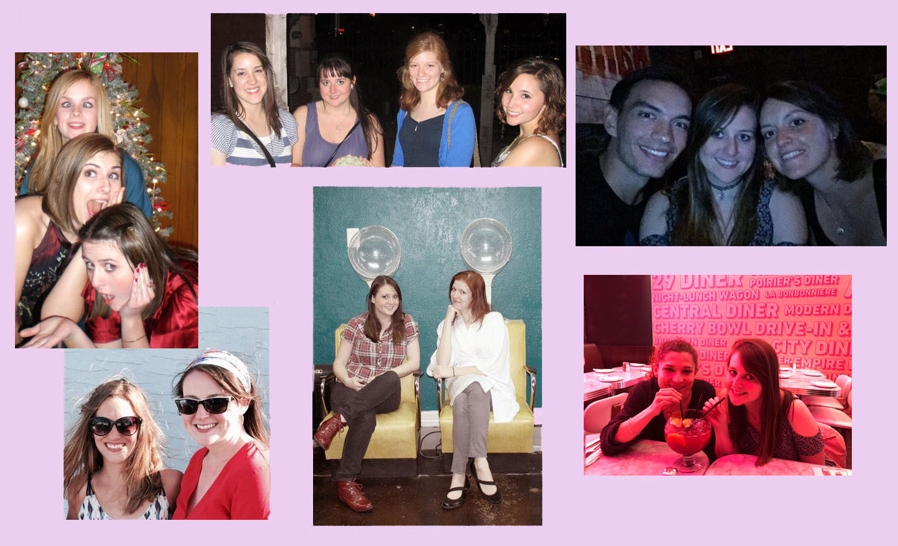
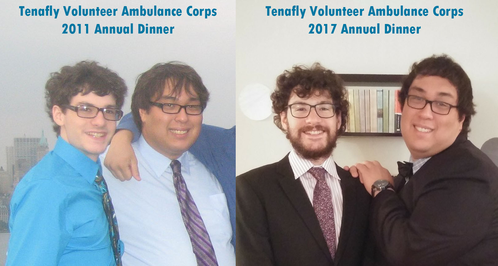

Carly is fortunate enough to have an amazing sister, Cayla. The two of them have been inseparable since Carly began sharing her parents at age 3. She even shares a birthday with her (Carly’s is Dec. 21st and Cayla’s is Dec. 20th)! But more importantly, they share a love of French Nouvelle Vauge cinema and French macarons- it’s only fitting that Cayla will be Maid of Honor at her sister’s wedding at Maison May this September....
C'est le temps de l'amour,
Le temps des copains et de l'aventure!

Carly's Bridesfolk
Ashley Fisher
Jelyn Wilcox
Adrian Stamps
Stephanie Appleton
Simone Renaud
Ginny Tincher
Laura Gallaher
Terry Berry
Tommy Mutell
Ophélie Zeugmann

Mark Eisenberg
(Best Man)
Tristan and Mark first became friends riding on Tenafly Volunteer Ambulance Corps. They both volunteered countless hours and usually ended up riding on the same emergency calls and hanging out together as they tried to entertain ourselves in the downtime. The two bonded outside of the corps when they both shared exploring the local area around them and would drive for many hours into the night while talking about life, the universe and everything. Even when Mark and Tristan went off to different colleges, they would visit each other regularly at school or meet up back in New Jersey to enjoy a late night cruise to White Castle, or hit up a local 24 hour diner.
Tristan’s Groomsmen:
Jasper Basch,
Michelangelo Borghi,
Matt Cohen,
Dan Deng,
Terence Kim,
Gil Moskowitz,
Ean Renaud,
C.J. Thompson